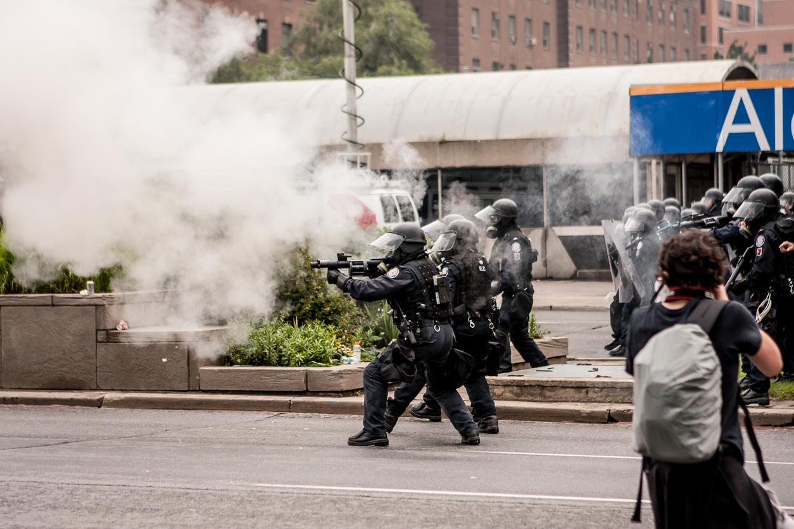

Let's take a closer look at some of the major ideas regularly animating our public discourse today.
When we contemplate the society in which we live, we often tend to frame our disagreements in terms of cooperation vs. competition: Are we working together collaboratively with others, or are we competing with them?
Politically, those on the left tend to be associated with a spirit of egalitarian cooperation, while those on the right are often viewed as proponents of unrestrained competition within a free market economy.
From an economic perspective, these alternatives can be portrayed as a choice between centralized planning or laissez-faire capitalism.
The tension between these two alternatives can be somewhat resolved through reference to multi-level selection theory, pointing out that we can cooperate at some levels (say, within a company), and compete at others (between companies, for example).
In our current state of polarizing identity politics, those favoring cooperation can easily be portrayed as socialist defenders of society's freeloaders, while those arguing for unrestrained competition can be painted as standard bearers for a true economic meritocracy.
And even when viewing things from a somewhat more enlightened perspective, these labels still seem to trap us between two poles, leading us to describe any sort of alternative as a “third way” of some kind.
But when we look at the major societal choices facing us today, and the major political battles in front of us, I'm starting to think the primary question is not really whether we want a society that is more cooperative, vs. one that is more competitive, but rather the following:
Are we ready for a society that is less coercive?
When we see a policeman choking the life out of someone by kneeling on his neck until they can no longer even beg for breath, that is an example of coercion by violent force.
And when that act of murder is done in front of a crowd of onlookers, some of whom are capturing the entire sequence on video, it is an example of coercion through a threat of violence to others in that community.
And when millions of people are denied access to housing, to clean water, to nutritious food, and to healthcare, or forced to work eighty or 100 or 120 hours per week just to keep their heads above water, that is an example of coercion through critical resource deprivation.
And when women are persuaded or forced into sexual submission by those in power, either to avoid bodily harm, or to avoid termination of their careers, those acts are also examples of coercion, either through violence, threats of violence, or threats of critical resource deprivation.
And when we see police and our national guard being called out to resist peaceful protesters, wearing full riot gear, and using tear gas and flash grenades to disperse protestors, and arresting card-carrying journalists, and forcing protestors into unmarked vehicles, we see further examples of coercion.
And when we look at the levels of gun ownership in the US, and listen to the reasons why people in the US seem to think they need so many guns, the most impassioned defenses of Second Amendment rights all revolve around the ability of citizens to defend themselves against coercion, either from our government, or from criminals.
And when we study the levels of incarceration in the US, we are again viewing examples of violent coercion on a massive scale.
And when we regard the growing levels of wealth inequality in this country, we are seeing an example of large-scale coercion through critical resource deprivation.
And so, when viewing the current political moment, including all of the protests telling us that Black Lives Matter, and now asking for defunding of the police, we are seeing something that cannot be framed in terms of traditional arguments pitting progressives against conservatives.
No, what we are seeing, I believe, is a broad and deep revulsion over the levels of coercion now underpinning our entire American society. And along with this revulsion a deep questioning:
If we have gotten rid of slavery, and have signed on to provide equal rights to all Americans, then why do we continue to need this level of coercion in our society? If we are now the land of the free – not just for white males, but for all of us – then why do we need so much coercive power, and why do we need to exercise it so often?
All of this is perhaps why economist Peter Boettke, when prompted recently by evolutionary biologist David Sloan Wilson to cast judgment on laissez-faire capitalism, responded that he did not see our current societal problems primarily through this lens.
I see instead a world of a permanent war economy, manipulation of money and credit, and rent-seeking society that privileges some at the expense of others – all of which distort and damage our politics, our markets, and our society. In essence, Power and Privilege have been amassed in an effort to govern over, rather than a self-governing democratic era where we dissipate power and deny privilege and seek to govern with each other as dignified equals. True liberalism in this sense would be seen as the emancipatory philosophy that it was written to be – seeking to eradicate the bonds of oppression imposed by the Altar, the Crown, the Sword, and from both crushing poverty and the protected privileges of the mercantilist class.
And so we have to ask: if we were to eradicate the bonds of oppression in our society, and eliminate privilege, and distribute power fairly, so that we can govern with each other as dignified equals, then would we really need the levels of coercion we are seeing all around us today? Would we really need to have the highest prison population in the world – even greater than that of Russia and China?
And so I think people are beginning to sense that the solution to a fear of coercion cannot continually be more coercion. It is as if our own society was locked into an arms race with itself: when an armed shooter invades a school, we respond by trying to put armed police in every school in the country. But where does this lead? Where has it already led? Perhaps this is why Seattle police chief Carmen Best recently remarked, on a national news show:
But what I believe, especially after I was at a march the day before yesterday with Black Lives Matter, and I was looking at the 60,000 people that were there, [with] signs saying “defund the police”, “stop police brutality”, “no qualified immunity” – and there were thousands of people carrying those particular signs – and I just realized it was a pivotal moment in history. We are going to move in a different direction and policing will never be the same as it was before.
And so perhaps we can dare to hope that we are truly turning a corner in our American society, that what we are seeing is not just another pendulum swing from right to left and back again, but a moment in time when we can begin to dial back the levels of coercion running rampant throughout our country, and start to work our way back to the untarnished ideals that our country's early leaders expressed on paper, even if the reality has been so long deferred – the notion that all humans are created equal, with rights to life, liberty and the pursuit of happiness, and the idea that we can have government of, by, and for the people.
For if we can achieve a society that truly embodies these emancipatory ideals, then I can but pray that coercion at the levels seen in American society today will no longer be needed, and can be replaced with commensurate investments in our common good.
Towards a more progressive future.